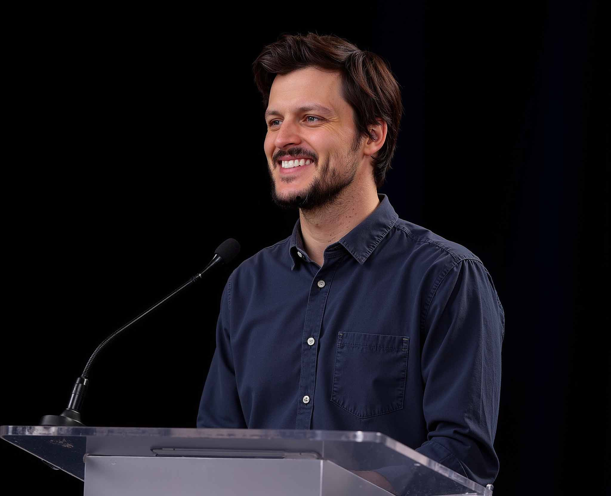

$
~/hello $ whoami

I specialize in breaking down complex problems to build better solutions. My experience spans from guiding executive teams through new technology adoption to transforming ambitious concepts into actionable strategies.
I help clients gain fresh insights and practical tools to overcome their most significant hurdles.
~/thoughts $ cat strategy.md
Exploring strategic thinking in technology, open standards, and software freedom.
Application Portability vs. Platform Openness: A Strategic Framework for Advancing Software Freedom
When no truly free solution exists, should we consolidate on the most open platform available, or maintain competition while promoting open application standards? A framework for thinking strategically about software freedom.
October 19, 2025 • 15 min read
Are you using AI to its full potential? Philly's innovation tournament can help find out
Based on Wharton research, this two-day event is designed to identify the people who understand what "AI lift" is all about.
October 14, 2025 • 5 min read
AI Harmony: Blending Human Expertise and AI For Business
An enlightening journey through the intricacies of AI's evolution, navigating the past, present, and future of artificial intelligence. Available as a free download or on Amazon and Audible.
September 12, 2023 • 4 hr 5 min listen
~/connect $ mail -s "Inquiry"
If you're interested in working together, please reach out. Referrals are always appreciated.